Introduction/Background
Predicting house prices is critical to the real estate industry, as it provides valuable insight for buyers, sellers, and even investors. Since we have access to housing data, we want to build a model that takes into account various home characteristics, such as square footage and home type, for accurate and reliable home price predictions.
Studies such as by Kok et al. (2017) utilized a linear regression model to predict home prices with features including house size, number of rooms, and location. The model was proven accurate based on the given training dataset, and the results were easy to interpret.
We will be using the Ames Housing Dataset, an alternative to the popular Boston Dataset found in James et al. (2018), but with more features and observations. This dataset can be found at the following link: Ames Housing Dataset on Kaggle
Problem Definition
Problem
The problem we are addressing is the challenge of accurately predicting house prices located in Ames, Iowa. Traditional methods often rely on simple models or manual predictions which don’t capture the more complex relationships between predictive variables. This leads buyers, sellers, and investors to make suboptimal decisions because of a lack of accurate information.
Motivation
By accurately automating house price prediction, it would help homebuyers, sellers, real estate agents, and investors make informed decisions.
Methods
Data Preprocessing Methods:
- Imputation:
- Numeric Columns: Median imputation to handle skewed distributions.
- Categorical Columns: Mode imputation for missing values, filling based on grouping (e.g., median for neighborhood).
- Encoding: One-hot encoding for categorical variables to ensure compatibility with regression models.
- Target Transformation: Log-transform of the target variable (SalePrice) to handle skewness.
- Feature Scaling: StandardScaler applied to numeric columns for uniformity in model fitting.
- Dimensionality Reduction: PCA applied to retain 95% of the variance while reducing feature dimensions.
Machine Learning Models:
- Lasso Regression:
- Uses L1 regularization for automatic feature selection and reducing overfitting.
- Hyperparameter tuning performed on alpha values ranging from 0.0001 to 1.0 using grid search.
- Ridge Regression:
- Employs L2 regularization to manage multicollinearity and provide robust predictions.
- Hyperparameter tuning on alpha values similar to Lasso for optimal regularization strength.
- Random Forest:
- An ensemble learning method with multiple decision trees for robust predictions and feature importance ranking.
- Hyperparameters included 100 estimators and a maximum depth of 15 to balance accuracy and overfitting.
- Stacked Residual Model:
- Combines Lasso Regression and Random Forest, with Lasso addressing linear relationships and Random Forest handling residuals.
- Hyperparameter tuning performed on Lasso alpha and Random Forest parameters for optimal stacking.
The preprocessing pipeline ensured data quality, consistency, and compatibility with the selected models. Lasso and Ridge Regression were chosen for their ability to regularize and manage high-dimensional data, with Ridge offering robust predictions and Lasso aiding feature selection. Random Forest provided flexibility to capture nonlinear patterns, while the Stacked Model combined these strengths to deliver the best overall performance. Hyperparameter tuning and cross-validation ensured that the models generalized well across unseen data.
Results and Expectations
Model-Specific Visualizations and metrics:
Click to expand to view each model's visualizations and performance metrics.
Legacy (Midterm LASSO)
Visualizations
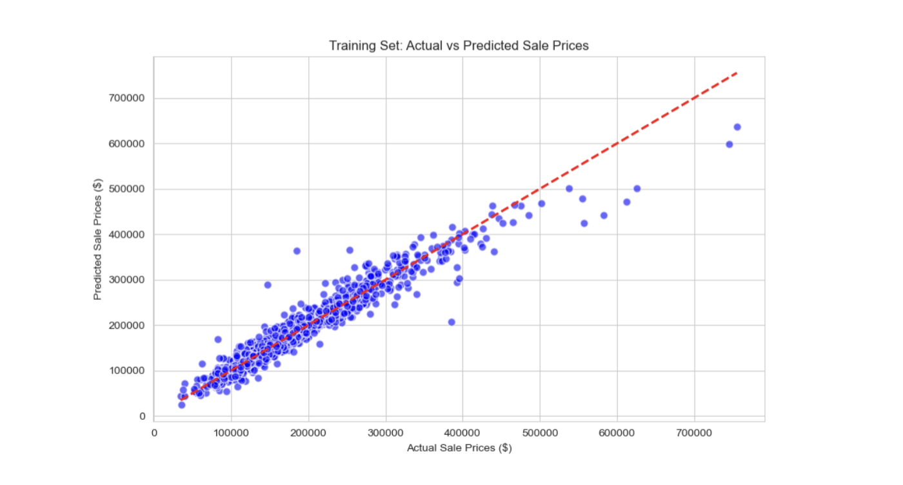
This image is a scatterplot displaying the relationship between the actual and predicted sale prices for the training dataset. Each point represents a house, with the actual price on the x-axis and the predicted price on the y-axis. The dashed red line represents a perfect prediction, where predicted prices match the actual prices. The scatterplot shows that the model is fairly accurate, as most points are close to this ideal line. However, there is some inaccuracy at higher price ranges, indicating limitations in the model’s performance.
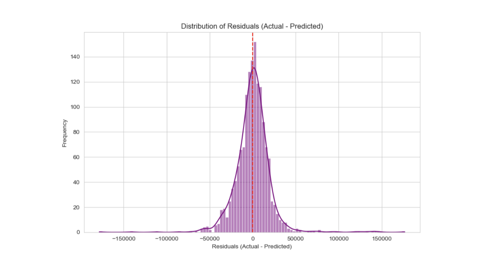
This image is a histogram displaying the distribution of residuals, which are the differences between actual and predicted sale prices for the training dataset. The residuals are centered around zero, indicating that the model’s predictions are generally unbiased. The spread of the distribution shows some outliers, with a slight right skew, suggesting a tendency for underprediction in higher-priced homes. The distribution of residuals provides insight into the model’s error characteristics.
Quantitative Metrics:
- Moderate RMSE (Root Mean Squared Error): $41,578
- High R² Score: 0.9301
Lasso Regression
Visualizations
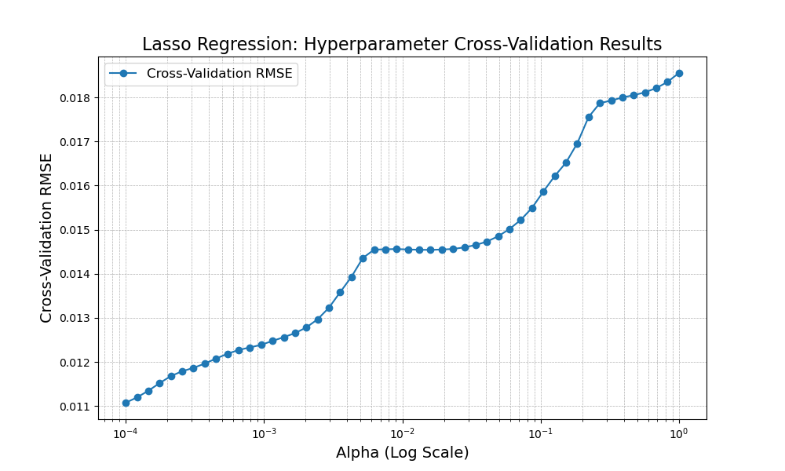
This line plot shows the relationship between the alpha hyperparameter (on a logarithmic scale) and the RMSE. It highlights the trade-offs between model regularization strength and performance, with the optimal alpha value minimizing RMSE. Using this, the optimal alpha was determined as 0.0001 as it led to the least RMSE.
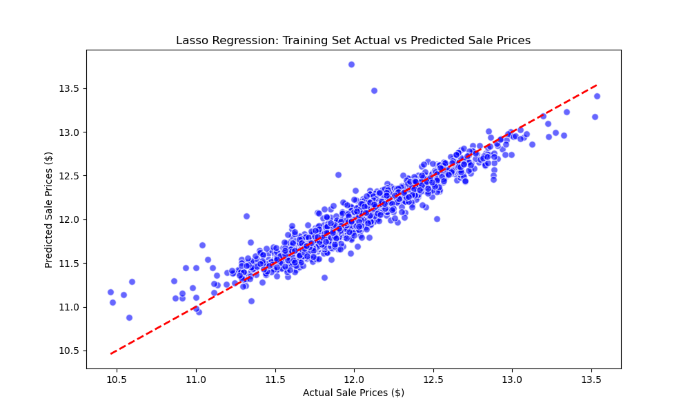
This scatterplot is displaying the relationship between the actual and predicted sale prices for the training dataset. Each point represents a house, with the actual price on the x-axis and the predicted price on the y-axis. Compared to the midterm version, this model appaears to scale to higher value houses, due to the use of log space, to reduce feature covariance.
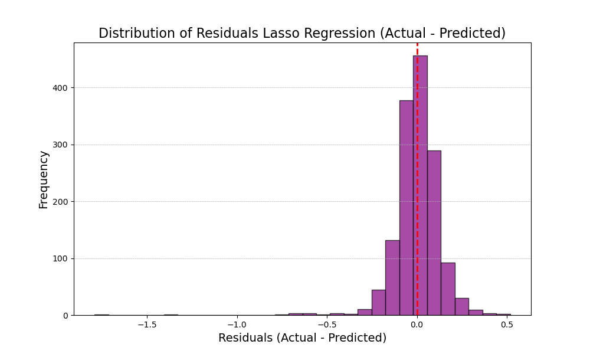
This histogram is displaying the distribution of residuals, which are the differences between actual and predicted sale prices for the training dataset. The residuals are fairly centered around 0, indicating that the model’s predictions are generally unbiased. The spread of the distribution shows some outliers, with a slight right skew, suggesting a tendency for underprediction in higher-priced homes. The distribution of residuals provides insight into the model’s error characteristics.
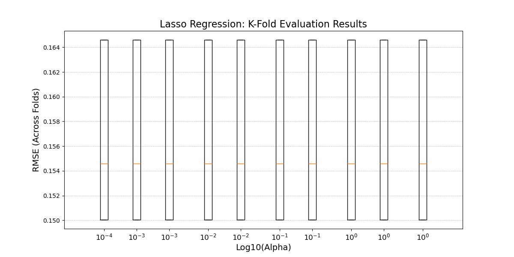
This boxplot displays the Root Mean Squared Error (RMSE) values obtained across multiple folds during k-fold cross-validation. Each box represents the range of RMSE values for a specific parameter setting (e.g., alpha in regularized models). The central line within each box indicates the median RMSE, while the top and bottom edges represent the upper and lower quartiles, respectively. It highlights the consistency of the model's performance and the stability of predictions across different data splits.
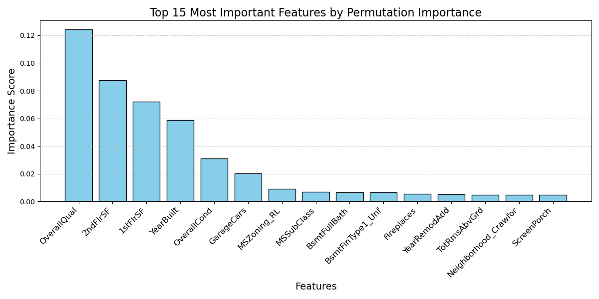
This bar plot displays the top 15 features ranked by their permutation importance. According to the model, the most important features to predict home price are "Overall Quality" and "Second Floor Square Footage"
Quantitative Metrics:
- Best Alpha: 0.0001
- Cross-Validation RMSE: 0.01
- Training RMSE: 0.13
- Training R² Score: 0.8946
- Alpha Values Shape: (50,)
- RMSE Values Shape: (50,)
Ridge Regression
Visualizations:
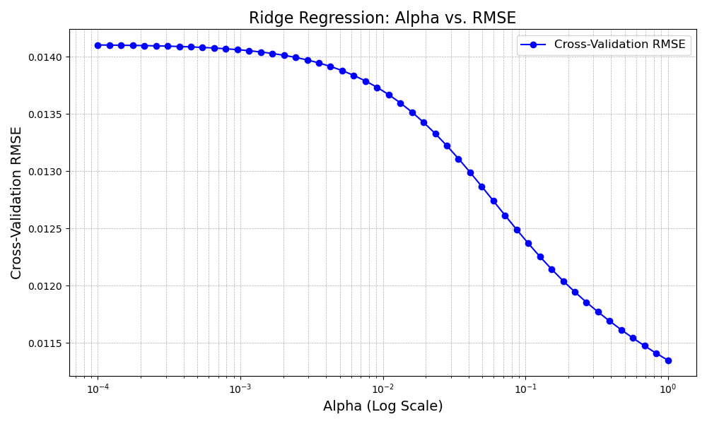
This line plot shows the relationship between the alpha hyperparameter (on a logarithmic scale) and the RMSE. It highlights the trade-offs between model regularization strength and performance, with the optimal alpha value minimizing RMSE. Using this, the optimal alpha was determined as 1.0 as it led to the least RMSE.
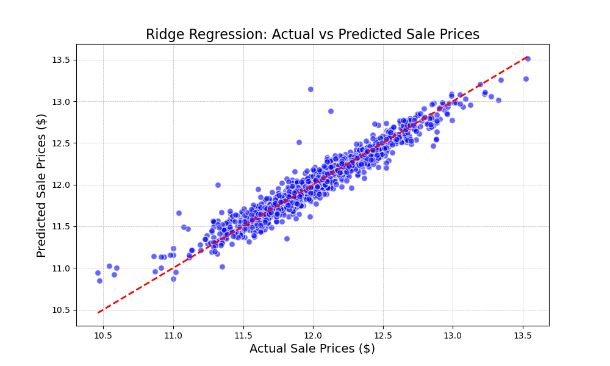
This scatterplot is displaying the relationship between the actual and predicted sale prices for the training dataset. Each point represents a house, with the actual price on the x-axis and the predicted price on the y-axis. Compared to the LASSO regression, this model appaears to scale fine at higher value houses, but there is some error in the mid-price range.
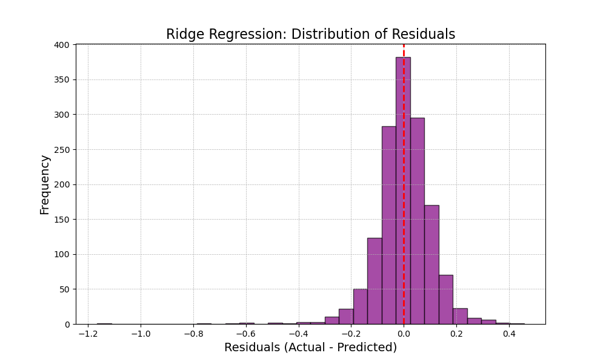
This histogram is displaying the distribution of residuals, which are the differences between actual and predicted sale prices for the training dataset. The residuals are fairly centered around 0, but less centered than the LASSO regression; indicating that the model’s predictions are generally more biased than LASSO. The spread of the distribution shows some outliers, with a slight right skew, suggesting a tendency for underprediction in higher-priced homes. The distribution of residuals provides insight into the model’s error characteristics.
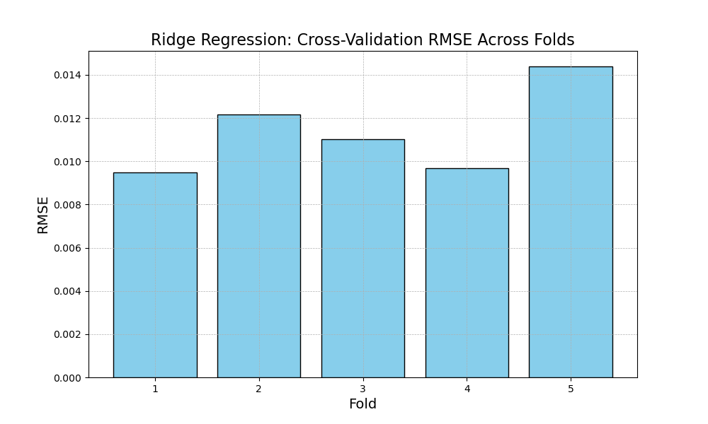
This bar plot depicts RMSE for each cross-validation fold, showcasing the model's consistency across different data splits and highlighting areas where performance could be improved. Relative to other models, ridge regression had a very consistant RMSE.
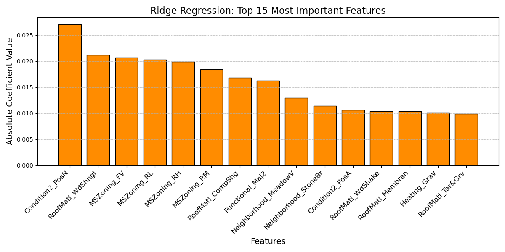
This bar plot displays the top 15 features ranked by their permutation importance. According to the model, the most important features to predict home price are "Condition2_PosN" and "RoofMatl_WdShngl"
Quantitative Metrics:
- Best Alpha: 1.0
- Cross-Validation RMSE: 0.01
- Training RMSE: 0.11
- Training R² Score: 0.9271
Random Forest
Visualizations:
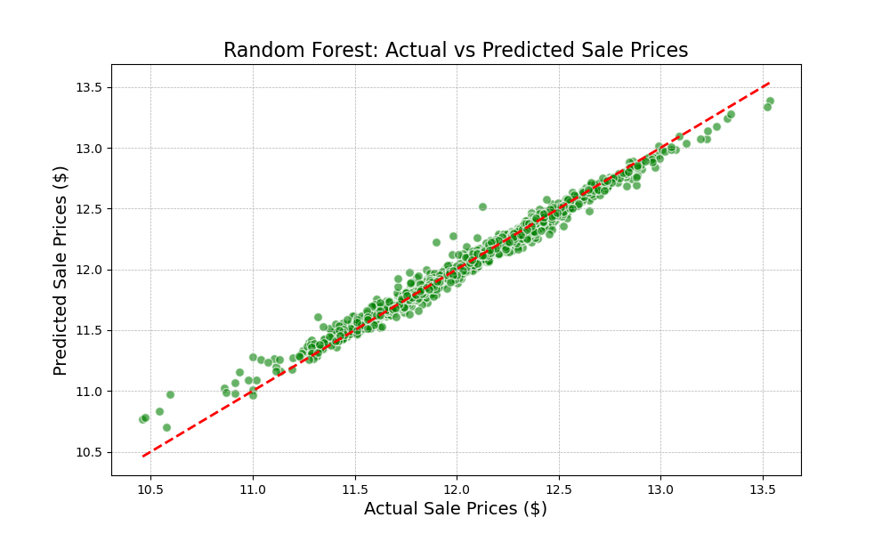
This scatterplot is displaying the relationship between the actual and predicted sale prices for the training dataset. Each point represents a house, with the actual price on the x-axis and the predicted price on the y-axis. Compared to other models, the points on this graph seem incredibely accurate. This is also reflected by the RMSE of 0.9816, indicating that the model is incredibely accurate in predicting home price
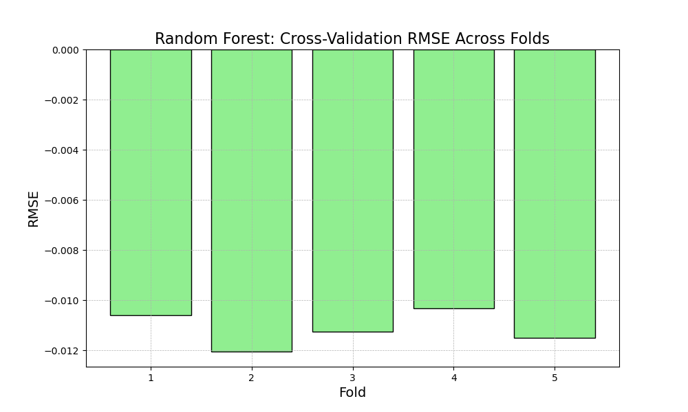
This bar plot visualizes RMSE for each fold in cross-validation. It demonstrates the stability of the Random Forest model’s performance across different data splits, with consistent RMSE values across folds. It is not as good as ridge regression, however.
NOTE: The RMSE values are "negative" due to the scoring method used in cross-validation. Please disregard the negative sign.
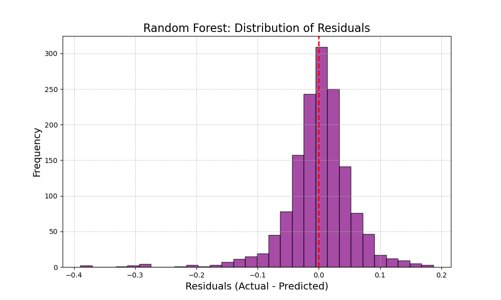
This histogram is displaying the distribution of residuals, which are the differences between actual and predicted sale prices for the training dataset. The residuals are centered around 0, ndicating that the model’s predictions are generally more biased than LASSO. The spread of the distribution shows a low amount outliers, but with a slight right skew, suggesting a tendency for underprediction in higher-priced homes. The distribution of residuals provides insight into the model’s error characteristics.
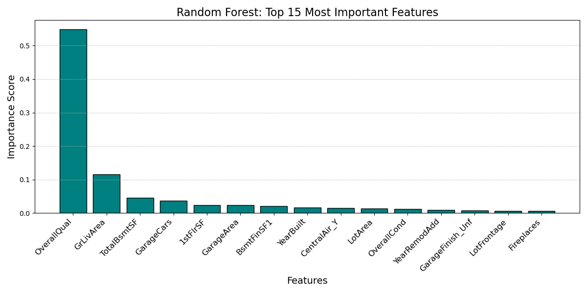
This bar plot displays the top 15 features ranked by their permutation importance. According to the model, the most important features to predict home price are "Overall Quality" and "GrLivArea"
Quantitative Metrics:
- Training RMSE: 0.05
- Training R² Score: 0.9816
Stacked Model
Visualizations:
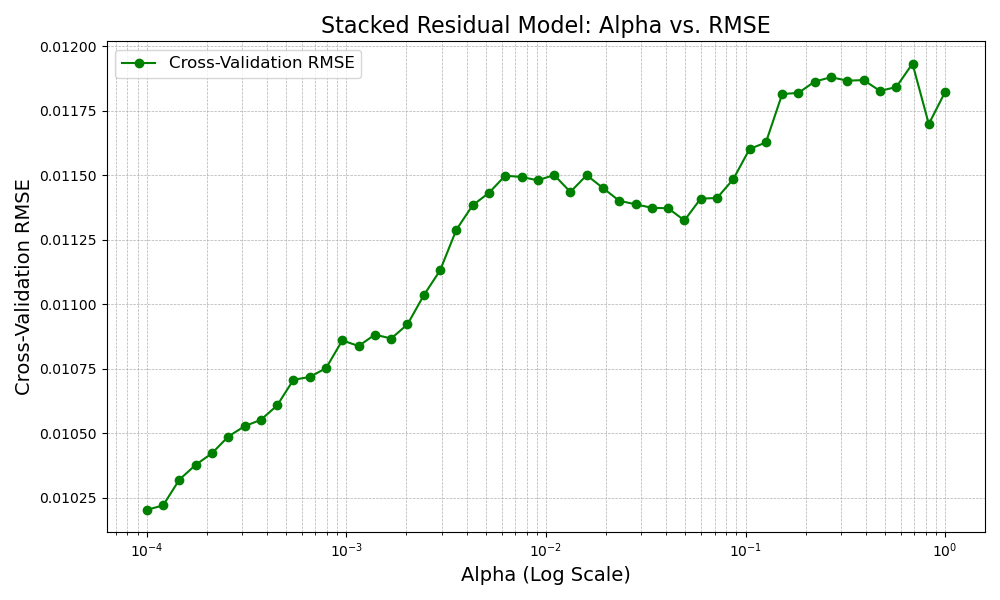
This line plot shows the relationship between the alpha hyperparameter (on a logarithmic scale) and the RMSE. It highlights the trade-offs between model regularization strength and performance, with the optimal alpha value minimizing RMSE. Using this, the optimal alpha was determined as 0.0001 as it led to the least RMSE.
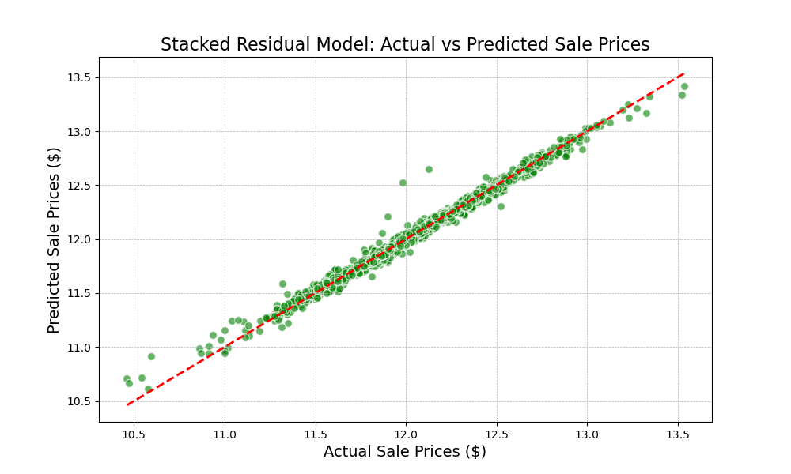
This scatterplot is displaying the relationship between the actual and predicted sale prices for the training dataset. Each point represents a house, with the actual price on the x-axis and the predicted price on the y-axis. Compared to other models, the points on this graph seem incredibely accurate. This is also reflected by the RMSE of 0.9866, indicating that the model is the most accurate in predicting home price
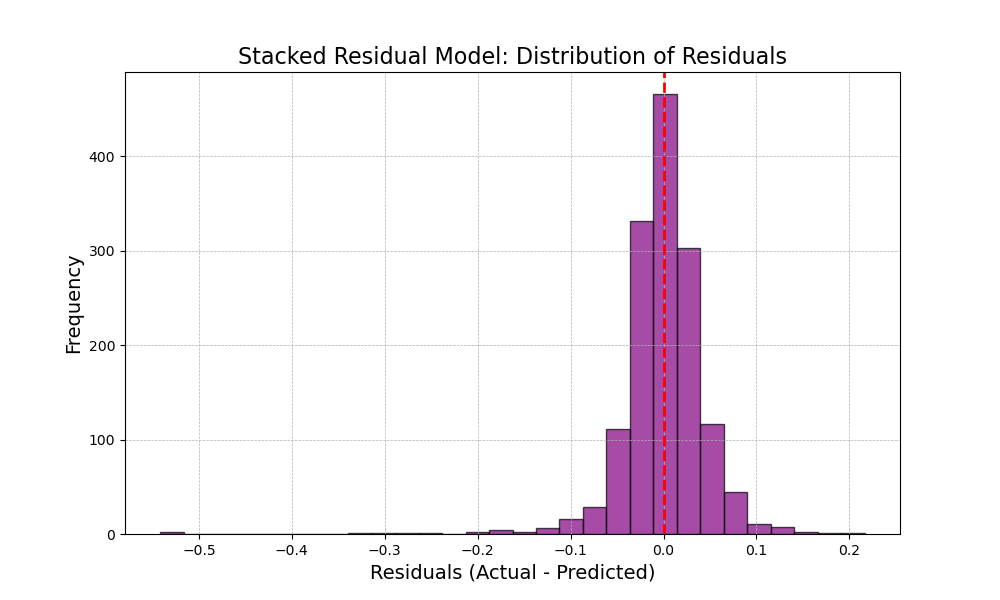
This histogram is displaying the distribution of residuals, which are the differences between actual and predicted sale prices for the training dataset. The residuals are very centered around 0, with a low amount of outliers; indicating that the model’s predictions are generally unbaised. The spread of the distribution shows a slight right skew, suggesting a tendency for underprediction in higher-priced homes. The distribution of residuals provides insight into the model’s error characteristics.
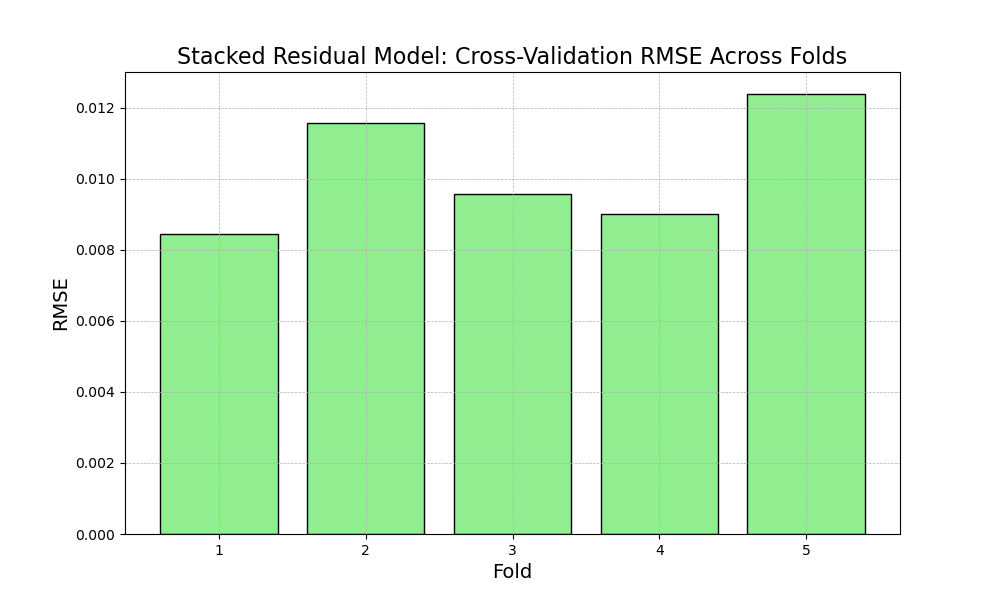
This bar plot visualizes RMSE for each fold in cross-validation. It demonstrates the stability of the stacked model’s performance across different data splits, with consistent RMSE values across folds. It is not as good as ridge regression, however.
Quantitative Metrics:
- Best Alpha: 0.0001
- Cross-Validation RMSE: 0.01
- Training RMSE: 0.05
- Training R² Score: 0.9866
Visualization Comparisons:
Best Actual vs Predicted: The Stacked Residual Model delivers the most accurate alignment with the red dashed line, broadcasting reliable predictions for all houses at all price ranges. Deviations are minimal compared to other models, even for higher-priced homes. This is further proven by the RMSE being 0.9866, presenting the model's accuracy.
Best Residual Distribution: The Random Forest Model has the tightest residual distribution centering, showcasing its ability to minimize errors effectively. The symmetrical and narrow spread indicates both precise predictions with low variance.
Best Cross-Validation RMSE: Ridge Regression demonstrates the most consistent RMSE across folds, as shown in the bar plot. This consistency indicates stable performance and robustness across different data splits.
Best Feature Importance: The Random Forest Model provides a clear and interpretable bar plot, highlighting "Overall Quality" and "GrLivArea" as dominant features. Further, the features are dominantly found to be the most siginifican, indicating confidence from the model.
Best Hyperparameter Tuning Visualization: The Lasso Regression plot clearly illustrates the relationship between alpha values (on a log scale) and RMSE, highlighting the optimal alpha value. The smooth curve provides an intuitive understanding of the regularization trade-offs.
Statistic Comparisions:
- Best Training RMSE: 0.05 (Achieved by both Random Forest and Stacked Residual Model)
- Highest Training R² Score: 0.9866 (Achieved by Stacked Residual Model)
- Lowest Cross-Validation RMSE: 0.01 (Achieved by Ridge, Lasso, and Stacked Residual Models)
- Most Consistent Model: Ridge Regression (High R² and stable RMSE across folds)
- Most Influential Feature: "Overall Quality" (Identified as the most important feature across all models)
Results:
From the midterm, we had noticed heteroskedasticity; decreased accuracy at higher values (evident
in the legacy model.) To imrpove on this we used a log transformation on the target variable, SalePrice,
to reduce the skewness and heteroskedasticity. This transformation improved the model's performance
significantly, as seen in the Lasso regression model. The lasso regression model was strong in the
feature selection, as its feature importance plot revealed the key variable of “overall quality”.
The Alpha vs RMSE plot also provided an ntuitive visualization of the tradeoffs of regularization,
showing the best alpha value that balances accuracy and simplicity in the model. The residuals, while
centered around zero, were wider than the ride and random forest models that we used, suggesting higher
predictions errors. This model’s ability to shrink coefficients to zero made it very strong in
finding the most impactful variables, particularly in high dimensional datasets. However,
the tradeoff with this is the excessive regularization that can lead to underfitting, when
some features are penalized unnecessarily and shrunk to become insignificant. Similarly to
the ridge model, lasso assumes linearity and ends up struggling to model the complex
relationships between multidimensional datasets. The weaker performance compared to
the ensemble models we used can be attributed to these two major limitations.
Computational efficiency and simplicity make it a very strong choice for quick feature
selection and light modeling, but one of the ensemble models would be best for anything
beyond that.
The ridge regression model had its strengths lie in its consistency and stability, as
demonstrated by the cross validation RMSE plot showing minimal variability across folds.
The robustness it displays also makes it reliable when using it with unseen data. The Actual
vs Predicted plot shows good correlation for most of the values but falls apart when it deals
with extreme prices, its residuals being wider than those of random forest, indicating higher
errors. Ridge regression also effectively handles the multicollinearity by penalizing large
coefficients which prevents overfitting but introduces the problem of underfitting similarly
to lasso regression. The nature of ridge regression is in a linear relationship; therefore, it
struggles a lot with complex relationships with lots of data. The model’s reliance on feature
scaling and regularization also means that small hyperparameter errors can lead to
underfitting. Its performance reflects the limitations stated with regularization preventing
overfitting and maintaining stability.
The random forest model had a very strong and robust performance, with the Actual vs
Predicted plot showing a strong alignment with the diagonal line, indicating high accuracy
predictions across the entire range of prices. Its residual distribution was the tightest and
most symmetrical centered around zero, showing the model’s strength in minimizing errors
effectively. The model also identified “overall quality” and “GrLivArea” as the most critical
features, aligning with our knowledge and highlighting the ability to capture complex and
nonlinear relationships between many variables. We can attribute these strengths to the
nature of Random Forest, which combines decision trees to reduce overfitting and
variance. The high-quality performance of this model has the downside of being very
computationally expensive, especially with larger datasets due to the need to train and
combine multiple decision trees. Another weakness is the inability to account for feature
interactions explicitly, differentiating it from the intuitive nature of the feature importance
plot. The model performed well because of the model’s robustness towards overfitting and
noise, using ensemble learning to produce stable and accurate predictions.
The stacked residual model was the best performing model overall. Its Actual vs Predicted
plot showed the closest alignment to the red dashed line, even for high-priced homes,
something that several model underperformed in. This model also achieved the highest
training R2 score of 0.9866 and tied with Random Forest for the best training RMSE of 0.05,
showing its ability to explain much of the variance in the target variable. The stacked
residual model combines the strengths of linear models, such as the ridge regression
model, with the residual error reduction capability of the random forest one, making it
highly effective at handling both linear and nonlinear patterns. However, due to the
complexity of this process, the model introduces some tradeoffs: higher sensitivity to
hyperparameter tuning and increased computational complexity, making it less practical
for larger and updating datasets that would be used for a more volatile housing market. The
model is excellent for this dataset due to its hybrid approach that leverages the strengths of
its components to reduce the residual error and increase the accuracy of the predictions.
The model’s performance is a testament to the effectiveness of ensemble learning and the
power of combining different models to create a more robust and accurate prediction
system.
Some next steps would be to create more visualizations for the stacked model, and perhaps explore other
ensemble models such as gradient boosting or XGBoost to see if they can improve the model’s performance.
Furthermore, we could also try different models in the stack, such as a neural network, to see if it can
improve the model’s performance. We could also try to improve the model’s performance by using different
feature selection techniques, such as recursive feature elimination, to see if we can improve the model’s
performance.
References
- Kok, N., Monkkonen, P., & Quigley, J. M. (2014). Land use regulations and the value of land and housing: An intra-metropolitan analysis. Journal of Urban Economics, 81, 136–148.
- Manning, W. G. (1998). The logged dependent variable, heteroscedasticity, and the retransformation problem. Journal of Health Economics, 17(3), 283–295.
- James, G., et al. (2018). Introduction to Statistical Learning. Springer.
Contribution Table
| Name |
Contribution to the Midterm Review |
| Lohith Dasari |
Presentation |
| Kushal Dudipala |
Wrote code for lasso regression, organized codebase and github, wrote code for website, updated the visualization/statistics/methods write up section, edited the results write up section, created visualizations, trained models for visualization and quantitative data, README.md/ Statistics.md |
| Axel Diaz |
- |
| Ben DiPrete |
Wrote code for ridge regression, random forest, and stacked model |
| Miguel Cruz |
Updated the Result write up section |